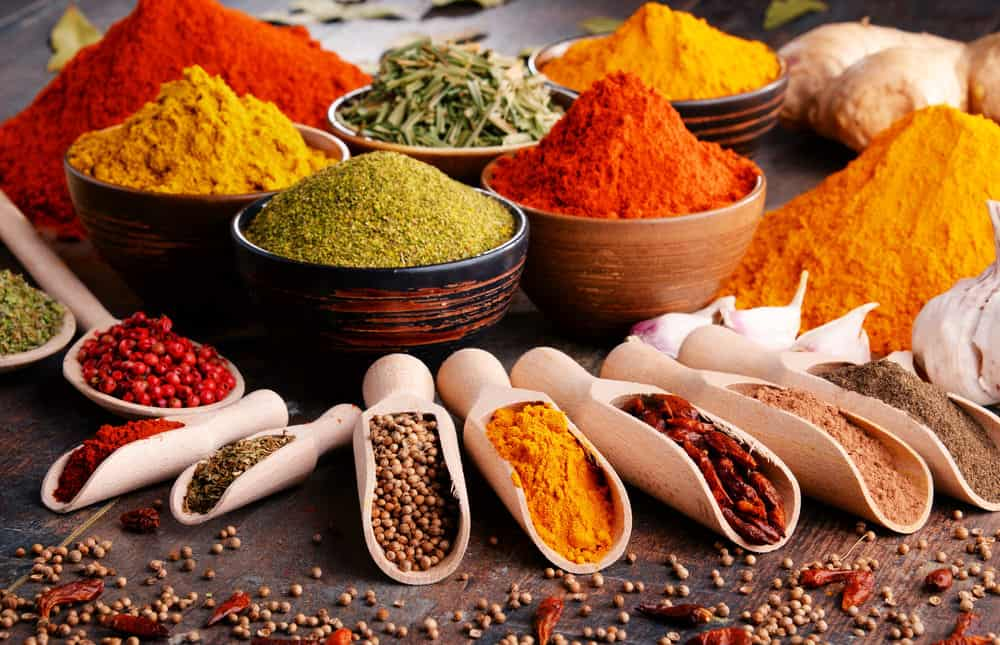

Sri Lankan spices
Sri Lanka is renowned for its rich and diverse array of spices that have been a part of its culinary heritage for centuries. From cinnamon to cardamom, cloves to coriander, Sri Lankan spices are highly sought after for their unique and distinct flavors. These spices are not only used in traditional dishes, but also in international cuisine, adding depth and complexity to a variety of dishes. Sri Lanka's tropical climate provides the perfect conditions for growing spices, and the country has a long history of trade and export in this field. Sri Lankan spices continue to be highly prized around the world for their quality and flavor, making them an essential ingredient in many kitchens.
Sri Lankan cinnamon, also known as Ceylon cinnamon, is a highly valued spice that is grown primarily in Sri Lanka. It is renowned for its sweet and warm flavor, as well as its health benefits. Sri Lanka has a long history of cinnamon cultivation, dating back to ancient times, and it remains a major producer and exporter of this spice today. Sri Lankan cinnamon is prized for its high quality and distinct aroma, and is used in a variety of dishes and beverages around the world. It is also known for its medicinal properties, which include anti-inflammatory and antioxidant effects. Sri Lankan cinnamon is a testament to the country's rich culinary heritage and its contribution to the global spice trade.
Sri Lankan cardamom is a highly aromatic and flavorful spice that is cultivated primarily in the central hills of Sri Lanka. It is known for its sweet and spicy taste, as well as its medicinal properties. Cardamom has been a part of Sri Lankan cuisine for centuries, and is used in a variety of dishes, both sweet and savory. Sri Lankan cardamom is highly sought after around the world for its superior quality, and is often used in gourmet cooking and baking. Its health benefits include aiding digestion, reducing inflammation, and improving oral health. Sri Lankan cardamom is a valuable part of the country's culinary heritage, and continues to be a key player in the global spice trade.
Sri Lankan turmeric is a vibrant and aromatic spice that is widely used in Sri Lankan cuisine. It is renowned for its bright yellow color and its earthy, slightly bitter flavor. Sri Lankan turmeric is primarily grown in the southern part of the country, where the warm and humid climate provides the perfect growing conditions. It is used in a variety of dishes, from curries to pickles, and is also used in traditional medicine for its anti-inflammatory and antioxidant properties. Sri Lankan turmeric is highly valued around the world for its superior quality and distinct flavor, making it a valuable export for the country. It is a testament to Sri Lanka's rich culinary heritage and its contribution to the global spice trade.

Sri Lankan cumin, also known as Jeera, is a popular spice used in Sri Lankan cuisine for its distinctive flavor and aroma. It has a warm, earthy taste and is commonly used in curries, soups, and stews. Sri Lanka's tropical climate provides the ideal environment for growing high-quality cumin, and the country has a long history of cumin cultivation and trade. Cumin is also known for its health benefits, including aiding digestion, boosting immunity, and reducing inflammation. Sri Lankan cumin is highly prized around the world for its superior quality and is a valuable export for the country, contributing to Sri Lanka's rich culinary heritage and its place in the global spice trade.
Sri Lankan coriander is a spice that is widely used in Sri Lankan cuisine for its distinct and aromatic flavor. It has a slightly sweet and citrusy taste and is commonly used in curries, chutneys, and pickles. Coriander is grown throughout the country, and Sri Lanka is known for producing high-quality coriander that is highly valued around the world. In addition to its culinary uses, coriander is also known for its medicinal properties, including aiding digestion and reducing inflammation. Sri Lankan coriander is an important component of the country's rich culinary heritage and its place in the global spice trade.
Cloves are the dried flower buds of the clove tree, widely used in cooking and medicine. These aromatic spice buds have a pungent, sweet flavor and are commonly used in savory dishes, baked goods, and beverages. Cloves are also known for their medicinal properties, such as aiding in digestion, reducing inflammation, and fighting infections. They contain various essential oils, antioxidants, and nutrients that contribute to their health benefits. Cloves have been used for centuries in traditional medicine and are still used in modern medicine today. Overall, cloves are a versatile and beneficial spice with a unique flavor profile.
Nutmeg is a popular spice that is commonly used in various cuisines around the world. It is derived from the seeds of the Myristica fragrans tree, which is native to Indonesia but is now grown in other parts of the world as well. Nutmeg has a warm, slightly sweet flavor that pairs well with both sweet and savory dishes. It is often used in baked goods, such as cakes and pies, and in savory dishes, such as stews and curries. In addition to its culinary uses, nutmeg has also been used for its medicinal properties, such as its ability to aid digestion and promote relaxation.
These spices are used in a variety of dishes, from savory curries to sweet desserts, and are known for their unique and complex flavors. Additionally, Sri Lankan cuisine also makes use of a variety of herbs, such as curry leaves, pandan leaves, and lemongrass, which add subtle and distinct flavors to dishes.